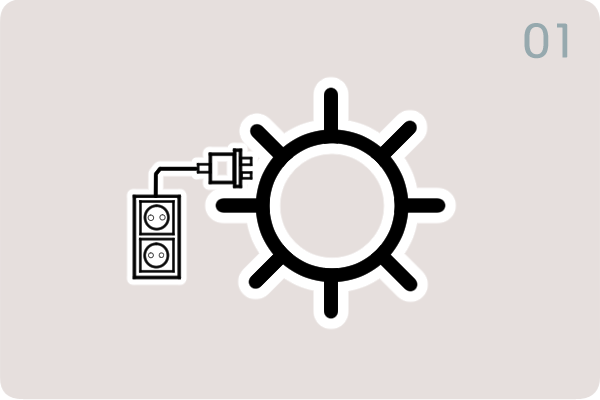
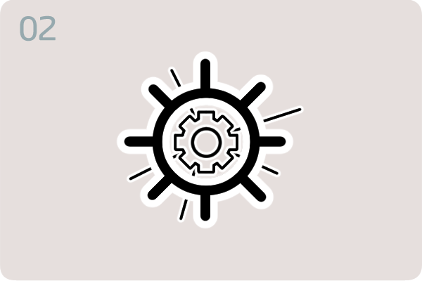
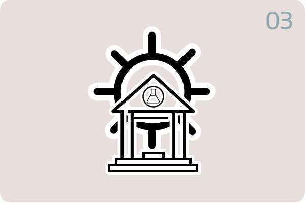
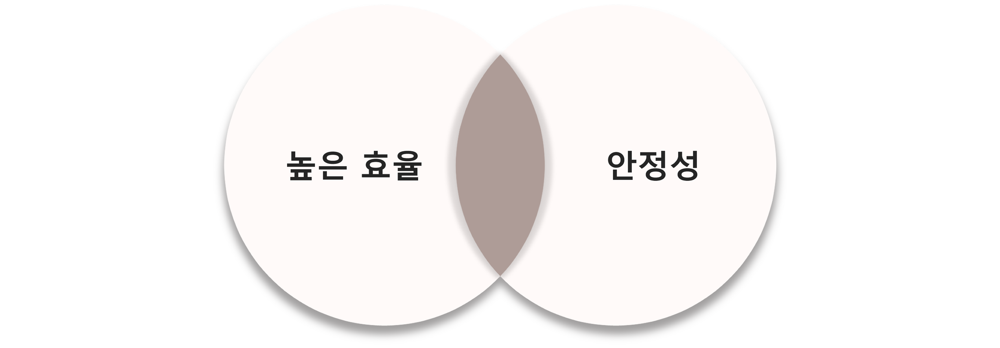

현재 이산화탄소 농도
1.5배 수준에 도달
화석연료를 계속 사용할 경우 2060년
이산화탄소 배출량이 산업화 이전 대비 2배에 이룰 수 있다.
해수면의 상승
한국 주변 해수면 지속적으로 상승.
지구 해양 평균보다 약 2~3배 높다.
온도 상승
지구 온난화 범위가 1.5~4.5도에 이룰 수 있다고 예상
4.5도까지 상승할 시 기상이변 발생 확률 상승.
에너지 전환 정책
재생에너지 확대 및 에너지효율 개선
에너지 신산업분야 일자리 창출 등 경제적 효과 기대.
에너지 전환 정책
인공태양
신재생에너지 "인공태양"의 등장하다.
핵융합 기술을 활용한 "인공태양" 기술이 차세대 에너지로 주목받기 시작했다.
태양은 핵융합을 통해 막대한 에너지를 생산하고, 지구는 이를 토대로 생태계를 유지한다.
여기서 핵융합이란 가벼운 핵들이 결합해 무거운 핵이 되는 것을 의미한다.
태양은 핵융합을 이용해 초당 3.9×1028J에 해당하는 에너지를 생산한다.
이는 핵폭탄 약 1000조개에 달하는 수준이며 석유 8T과 맞먹는 에너지이기도 하다.
인공태양은 이러한 태양의 에너지원리를 이용한다.
인공태양이 내뿜는 고효율 열에너지로 증기 터빈을 돌리면
무한 전기에너지를 얻을 수 있다. 이러한 핵융합 에너지는 물을 반응원료로
사용하기 때문에 거의 무한하다고 예상이 된다.

인공태양의 주된 에너지원은 핵융합반응이다.
인공태양은 핵융합반응으로 에너지를 만든다.
지구에서 핵융합 반응을 일으키기 위해서는 1,500만도보다 7배 뜨거운 1억도
이상의 초고온 플라즈마 환경을 유지가 필요하다.
이유는 태양과 지구의 질량 차이에 있다. 태양은 지구의 33만 2950배의 질량을 가진
플라즈마 덩어리다. 따라서 지구에서 핵융합 반응을 이끌어 내려면 태양 중심부와
동일한 조건을 갖춰야한다는 전제가 성립한다.또한 원료도 일반 수소보다
더 낮은 온도에서 활발하게 작용하는 중수소, 삼중수소를 이용해야한다.

한국은 여러국가와 함께 인공태양을 개발중이다.
인공태양을 만들기 위해 모인 산업기구인 ITER과 그에 속한 KSTAR.
ITER 프로젝트는 상용화 가능한 최소 핵융합 효율의 확실한 달성을 목표로
하는 국제 공동 핵융합 실험으로서 미국, 러시아, 유럽연합, 중국, 일본, 대한민국 등
총 34국이 참여한는 국제연구개발사업이다. 현재 ITER의 목표는 500와트의 전력을 생산해
에너지 회수율을 10배까지 올리는 것을 목표로 하고 있다.
한국도 ITER에 소속되어 연구를 진행중이며 한국의 핵융합 연구를 KSTAR라고 부른다.
KSTAR는 대한민국이 독자개발에 성공한 한국형 핵융합 연구로로 한국핵융합에너지연구원에
위치하고 있다. 현재 목표는 1억도가 넘는 초고온의 플라즈마를 5분동안 유지하는 것이
목표이다.


원자력 발전의 0.04%에 불과한 소량의 방사능만 발생해 폐기물을 10년에서
길어도 100년 이내에는 모두 재활용이 가능하다.
핵융합 장치에 균열 등의 손상 발생 시 내부의 진공 상태에 있는 수소 에너지들이
모두 빛으로 변하면서 열을 모두 흡수함으로 기계 손상 시에도 안전하다.
원자력 발전과 달리 방사성 물질이나 온실가스가
나오지 않아 친환경 기술로 여겨진다.
자원고갈 염려가 없다.
바닷물 1L로 휘발유 300L에 달하는 에너지를 생산가능하다.
인공태양의 에너지 생성과정
인공태양을 만드는 방법 중 현재 사용하고
있는 방법은 "토카막"이다.
토카막은 코일로 만든 자석에서 발생하는
자기장을 이용해 플라즈마를
가두는 방을 의미한다.
플라즈마를 구속하는 D자 모양의 초전도 자석으로 자기장을 만들어
플라즈마가 도넛 모양의 진공용기 내에서 안정적 상태를 유지하도록 제어한다.
태양이 빛을 내는 원리를 이용한 것이며 중수소와
삼중수소를 수억도의 플라스마 상태로 가열하고
플라스마를 약 1억도 이상으로 가열해 핵융합반응을 일으킨다.
핵융합반응으로 발생되는 질량결손에 의해 핵융합에너지가 중성자 운동에너지로
나타나면서 이 과정에서 막대한 빛에너지가 생성된다.
블랑켓 기술
담요라는 뜻을 지닌 핵융합로의 필수 부품으로
이름처럼 핵융합로 전체를 감싸고 있다.
에너지 변환
에너지 변환은 핵융합로 내부에서 수소핵의 핵융합 반응을 통해 헬륨과 중성자가 만들어져
중성자들을 수집하여 중성자가 지닌 운동에너지를 열에너지로 바꾸어주는 역할을 한다.
이렇게 생겨난 열에너지가 물을 데워 증기를 발생시키고 터빈을 돌려 전기에너지 발생하도록 한다.
삼중수소 자체 생산
삼중수소는 자연상태에서 얻기 어려워 핵융합로 내부의
블랑켓을 통해 생산하여 블랑켓의 내부에는 존재하는 리튬벽은 핵융합 반응을 통해
수집한 중성자와 반응하여 삼중수소 생산하게 해준다.
인공태양의 어려움
온도
세상에서 가장 차가운 그릇에 가장 뜨거운 물질을 가두는 것으로 비유한다.
고온의 플라즈마를 진공 공간 내에 만들어야 하는 것과 불안정한 플라즈마를
유지하기 위해 외부온도를 영하 273도로 유지해야한다는 것에서 어려움이 있다.
플라즈마의 불안정화
핵융합로에 갇혀 있는 초고온 플라스마는 바깥 부분과의 큰 압력·온도 차로 불안정한 특성을 지닌다.
토카막형 플라즈마 경계면의 미세한 압력 변화 때문에 플라즈마가 안정적으로
자기장을 따라 움직이지 않고 요동치기에 유지에 어려움이 있다.
다른나라의 인공태양